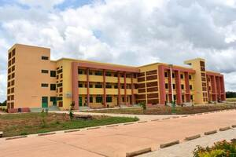
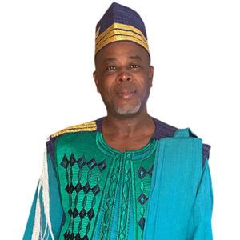

Présentation de l'université Thomas Sankara
Fondement et Évolution Historique
L'Université Thomas Sankara (UTS) trouve ses racines dans la volonté de l'État burkinabè de moderniser et de décentraliser l'enseignement supérieur. Création initiale : Elle a été initialement établie en 2007 sous le nom d'Université Ouaga II dans le but stratégique de désengorger l'Université Joseph Ki-Zerbo (anciennement Université de Ouagadougou). Changement de nom et Hommage : Le 15 octobre 2020, l'institution a été officiellement rebaptisée Université Thomas Sankara. Ce changement est un hommage solennel et durable rendu au Capitaine Thomas Isidore Noël SANKARA, le Père de la Révolution Burkinabè, soulignant l'engagement de l'université envers les idéaux de développement et de souveraineté nationale.
Statut et Mission Institutionnelle
L'UTS est une institution d'enseignement supérieur et de recherche jouant un rôle central dans le développement socio-économique du Burkina Faso. Statut : L'Université Thomas Sankara est un établissement public sous la tutelle de l'État burkinabè. Cela signifie qu'elle est financée par l'État et qu'elle s'inscrit dans le cadre de l'orientation nationale de l'enseignement supérieur. Accès : La majorité des étudiants y accèdent grâce à l'orientation de l'État, assurant une répartition équitable des opportunités éducatives. Mission : Sa mission principale est de former des cadres compétents, de promouvoir la recherche scientifique et technique, et de contribuer à la culture et à l'innovation au service de la nation.
Gouvernance Actuelle
La direction de l'UTS est assurée par un leadership académique expérimenté. Présidence actuelle : Le Professeur Pam ZAHONOGO est l'actuel Président de l'Université Thomas Sankara, prenant ses fonctions depuis mai 2022. Il supervise la mise en œuvre de la stratégie académique et administrative de l'institution.
Les Unité de Formation et de Recherche
Elle est composée de trois principaux Unités de Formation et de Recherche(UFR). Ces Unités de Formation et de Recherche sont notament:
- Unités de Formation et de Recherche en Science Juridique et Politique
- Unités de Formation et de Recherche en Science Economique et de Gestion
- Unités de Formation et de Recherche en Science et Technologies
Unités de Formation et de Recherche en Science et Technologies
L'Unité de Formation et de Recherche en Science et Technologies, bien que méconnu des réseau existe belle et bien et fait partie des piliers dans le domaine de la formation universitaire,
elle regroupe plusieurs filières du monde scientifique. Elle a pour actuel Directeur le Professeur Oumar TRAORE et Directeur Adjoint le Professeur Boureima ZERBO tous deux élus en juillet 2022.
L'UFR/ST regroupe plusieurs département dont:
- Mathématique-Informatique
- Physique
- Biologie
- Chimie
L'Unité de Formation et de Recherche en Science et Technologies, bien que méconnu des réseau existe belle et bien et fait partie des piliers dans le domaine de la formation universitaire, elle regroupe plusieurs filières du monde scientifique. Elle a pour actuel Directeur le Professeur Oumar TRAORE et Directeur Adjoint le Professeur Boureima ZERBO tous deux élus en juillet 2022. L'UFR/ST regroupe plusieurs département dont:
- Mathématique-Informatique
- Physique
- Biologie
- Chimie
Nous nous contenterons de présenter une filières du départements de Mathématiques-Informatique qui est l'Informatique.